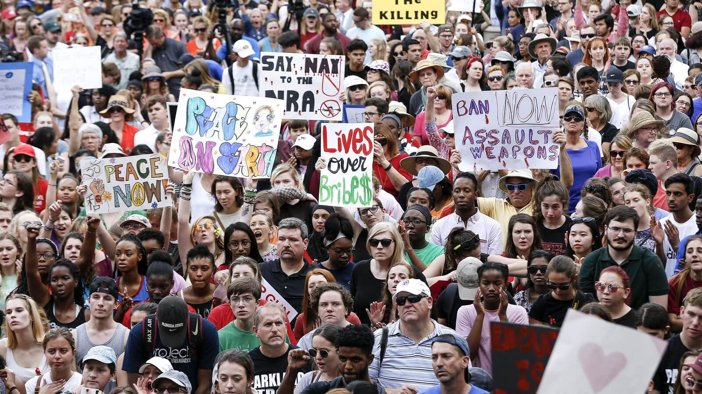
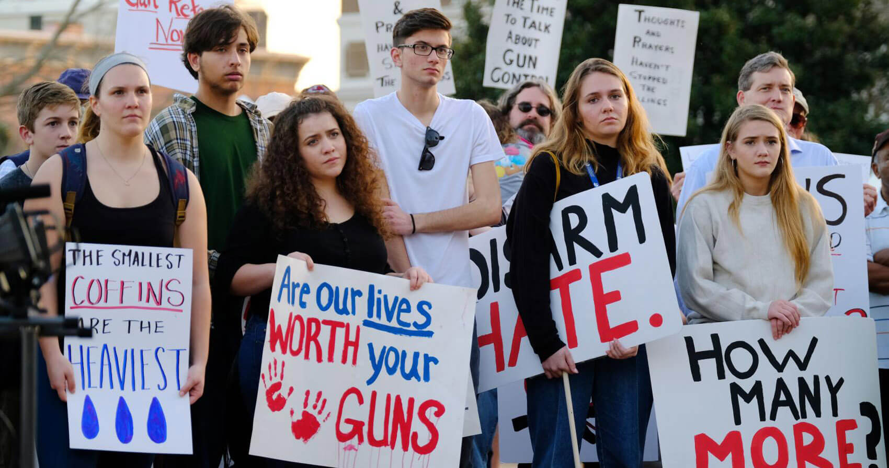
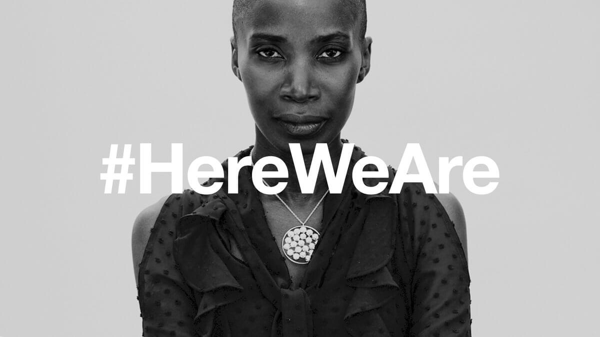

NEWS
MARCH FOR OUR LIVES:
50 MILES MORE


Student activists take part in a four-day, 50-mile march from Madison to Janesville, Wisconsin - Speaker of the House Paul Ryan’s hometown - to call for gun control. The idea for “March for Our Lives: 50 Miles More” came to a group of students at Shorewood High School - in a suburb of Milwaukee - as they were discussing ways to continue raising their voices on the issue of gun reform after Saturday’s national march.
TWITTER'S TRIBUTE TO
WOMEN RINGS HOLLOW FOR SOME TARGETS OF ABUSE

During the Oscars, Twitter ran a TV ad featuring the words of queer poet Denice Frohman alongside a series of women, including filmmaker Ava DuVernay and actress/producer Issa Rae. “I heard a woman becomes herself the first time she speaks without permission,” the ad begins. It finishes with the hashtag #HereWeAre.The campaign is intended to spark positive conversation around the strength of women.